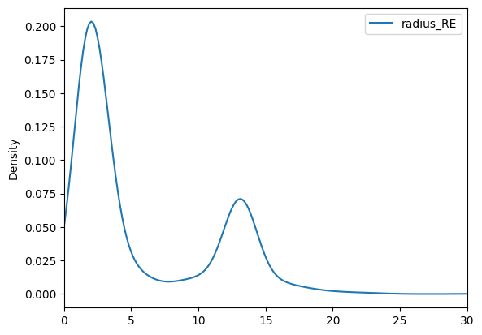

Intro to Pandas
Code-Along Examples
Here you have space to work through the code that addresses the prompts in the slide show. The prompts are repeated here for your convenience.
Day 1
I. Create a DataFrame
Import Pandas and Numpy.
Make an array with 3 columns and 4 rows, with data values of 1-12.
Convert it to a DataFrame with columns named
['a', 'b', 'c'].
import pandas as pd
import numpy as np
a = np.arange(1,13).reshape((4,3))
adf = pd.DataFrame(a, columns=['a', 'b', 'c'], index=['w','x','y','z'])
print(adf)
a b c
w 1 2 3
x 4 5 6
y 7 8 9
z 10 11 12
II. View Indices of a DataFrame
Get the indices of DataFrame in previous example and print the data-type of the index. See documentation.
print(adf.index)
print(adf.index.dtype)
Index(['w', 'x', 'y', 'z'], dtype='object')
object
III. Basic I/O
Load the file
'exoplanets_5250_EarthUnits.csv'into a DataFrame calledexos.Extra: set the index to the leftmost column.
Write the DataFrame to a tab-separated text file (.txt). The name is up to you.
exos = pd.read_csv('exoplanets_5250_EarthUnits.csv', index_col=0)
exos.head(3)
| distance | star_mag | planet_type | discovery_yr | mass_ME | radius_RE | orbital_radius_AU | orbital_period_yr | eccentricity | detection_method | |
|---|---|---|---|---|---|---|---|---|---|---|
| #name | ||||||||||
| 11 Comae Berenices b | 304.0 | 4.72307 | Gas Giant | 2007 | 6169.20 | 12.096 | 1.29 | 0.892539 | 0.23 | Radial Velocity |
| 11 Ursae Minoris b | 409.0 | 5.01300 | Gas Giant | 2009 | 4687.32 | 12.208 | 1.53 | 1.400000 | 0.08 | Radial Velocity |
| 14 Andromedae b | 246.0 | 5.23133 | Gas Giant | 2008 | 1526.40 | 12.88 | 0.83 | 0.508693 | 0.00 | Radial Velocity |
exos.loc['55 Cancri e',['planet_type','mass_ME']]
planet_type Super Earth
mass_ME 7.99
Name: 55 Cancri e, dtype: object
exos.to_csv('exos_5250_EUnits.txt', sep='\t')
IV. Data Inspection
Call
.info()off the exoplanets DataFrame from the previous example. Familiarize yourself with the specs that are included. Notice anything weird?If nothing stuck out in #1, call
.describe()on that DataFrame.
exos.info()
<class 'pandas.core.frame.DataFrame'>
Index: 5250 entries, 11 Comae Berenices b to YZ Ceti d
Data columns (total 10 columns):
# Column Non-Null Count Dtype
--- ------ -------------- -----
0 distance 5233 non-null float64
1 star_mag 5089 non-null float64
2 planet_type 5250 non-null object
3 discovery_yr 5250 non-null int64
4 mass_ME 5250 non-null object
5 radius_RE 5250 non-null object
6 orbital_radius_AU 4961 non-null float64
7 orbital_period_yr 5250 non-null float64
8 eccentricity 5250 non-null float64
9 detection_method 5250 non-null object
dtypes: float64(5), int64(1), object(4)
memory usage: 580.2+ KB
exos.describe()
| distance | star_mag | discovery_yr | orbital_radius_AU | orbital_period_yr | eccentricity | |
|---|---|---|---|---|---|---|
| count | 5233.000000 | 5089.000000 | 5250.000000 | 4961.000000 | 5.250000e+03 | 5250.000000 |
| mean | 2167.168737 | 12.683738 | 2015.732190 | 6.962942 | 4.791509e+02 | 0.063924 |
| std | 3245.522087 | 3.107571 | 4.307336 | 138.673600 | 1.680445e+04 | 0.141402 |
| min | 4.000000 | 0.872000 | 1992.000000 | 0.004400 | 2.737850e-04 | 0.000000 |
| 25% | 389.000000 | 10.939000 | 2014.000000 | 0.053000 | 1.259411e-02 | 0.000000 |
| 50% | 1371.000000 | 13.543000 | 2016.000000 | 0.102800 | 3.449692e-02 | 0.000000 |
| 75% | 2779.000000 | 15.021000 | 2018.000000 | 0.286000 | 1.442163e-01 | 0.060000 |
| max | 27727.000000 | 44.610000 | 2023.000000 | 7506.000000 | 1.101370e+06 | 0.950000 |
V. Selection Syntax
Assign rows 25 through 35 of the exoplanets DataFrame to another DataFrame called
df2.Extract and print both the
'planet_type'and'mass_ME'columns ofdf2.Go back to the full exoplanets DataFrame, select rows where the
'discovery_yr'is before 2007 and'planet_type'is not ‘Gas Giant’, and print only the'planet_type'column of that selection.
df2 = exos.iloc[25:35]
print(df2[['planet_type','mass_ME']])
planet_type mass_ME
#name
51 Eridani b Gas Giant 636.00
51 Pegasi b Gas Giant 146.28
55 Cancri b Gas Giant 264.13
55 Cancri c Gas Giant 54.51
55 Cancri d Gas Giant 1233.20
55 Cancri e Super Earth 7.99
55 Cancri f Gas Giant 44.84
61 Virginis b Neptune-like 5.10
61 Virginis c Neptune-like 18.20
61 Virginis d Neptune-like 22.90
exos.loc[(exos['discovery_yr']<2007) &
(exos['planet_type'] != 'Gas Giant'),
'planet_type']
#name
55 Cancri e Super Earth
GJ 436 b Neptune-like
GJ 581 b Neptune-like
GJ 876 d Neptune-like
HD 160691 d Neptune-like
HD 190360 c Neptune-like
HD 4308 b Neptune-like
HD 49674 b Neptune-like
HD 69830 b Neptune-like
HD 69830 c Neptune-like
HD 69830 d Neptune-like
HD 99492 b Neptune-like
OGLE-2005-BLG-169L b Neptune-like
OGLE-2005-BLG-390L b Neptune-like
PSR B1257+12 b Terrestrial
PSR B1257+12 c Super Earth
PSR B1257+12 d Super Earth
Name: planet_type, dtype: object
VI. Bad Data Handling
The exoplanets DataFrame has space characters (
' ') for missing values in the'mass_ME'&'radius_RE'columns. Use the .replace() method to replace' 'withnp.NaNin-place.Extra: use the
.astype()method to convert the data types of these columns to'float64'in-place. Check your results with.info()
Use the
.mask()method to mask the'eccentricity'column wherever the data are exactly 0 (these are assumed values). The “Non-Null Count” for that column in info() should be smaller.
exos['mass_ME']=exos['mass_ME'].replace(' ', np.nan).astype('float64')
exos['radius_RE']=exos['radius_RE'].replace(' ', np.nan).astype('float64')
exos.info()
<class 'pandas.core.frame.DataFrame'>
Index: 5250 entries, 11 Comae Berenices b to YZ Ceti d
Data columns (total 10 columns):
# Column Non-Null Count Dtype
--- ------ -------------- -----
0 distance 5233 non-null float64
1 star_mag 5089 non-null float64
2 planet_type 5250 non-null object
3 discovery_yr 5250 non-null int64
4 mass_ME 5227 non-null float64
5 radius_RE 5233 non-null float64
6 orbital_radius_AU 4961 non-null float64
7 orbital_period_yr 5250 non-null float64
8 eccentricity 5250 non-null float64
9 detection_method 5250 non-null object
dtypes: float64(7), int64(1), object(2)
memory usage: 580.2+ KB
exos['eccentricity']=exos['eccentricity'].mask(exos['eccentricity']==0)
exos.info()
<class 'pandas.core.frame.DataFrame'>
Index: 5250 entries, 11 Comae Berenices b to YZ Ceti d
Data columns (total 10 columns):
# Column Non-Null Count Dtype
--- ------ -------------- -----
0 distance 5233 non-null float64
1 star_mag 5089 non-null float64
2 planet_type 5250 non-null object
3 discovery_yr 5250 non-null int64
4 mass_ME 5227 non-null float64
5 radius_RE 5233 non-null float64
6 orbital_radius_AU 4961 non-null float64
7 orbital_period_yr 5250 non-null float64
8 eccentricity 1674 non-null float64
9 detection_method 5250 non-null object
dtypes: float64(7), int64(1), object(2)
memory usage: 580.2+ KB
VII. Basic Operations
Calculate the median of all numeric columns in the exoplanets DataFrame.
Divide the
'mass_ME'column by 317.8 & assign the result to'mass_MJ'(planet mass in Jupiter masses)
print(exos.median(numeric_only=True))
distance 1371.000000
star_mag 13.543000
discovery_yr 2016.000000
mass_ME 8.470000
radius_RE 2.732800
orbital_radius_AU 0.102800
orbital_period_yr 0.034497
eccentricity 0.140000
dtype: float64
exos['mass_MJ']=exos['mass_ME']/317.8
exos['mass_MJ'].head()
#name
11 Comae Berenices b 19.412209
11 Ursae Minoris b 14.749276
14 Andromedae b 4.803021
14 Herculis b 8.143927
16 Cygni B b 1.781120
Name: mass_MJ, dtype: float64
VIII. Reorganizing Data
Let
df1 = pd.DataFrame(np.random.randint(0,high=9,size=(4,3)), columns=['B','a','C'], index=['i','j','h','k']) and
df2 = pd.DataFrame(np.identity(3), columns=['B','C','D'], index=['k','l','m']).
Sort
df1by index, by index again withaxis=1, and then by the values of column'C'.Concatenate
df1anddf1. What happens where the indices aren’t shared?
df1 = pd.DataFrame(np.random.randint(0,high=9,size=(4,3)), columns=['B','a','C'], index=['i','j','h','k'])
df2 = pd.DataFrame(np.identity(3), columns=['B','C','D'], index=['k','l','m'])
df1.sort_index()
| B | a | C | |
|---|---|---|---|
| h | 6 | 3 | 2 |
| i | 6 | 5 | 1 |
| j | 0 | 5 | 0 |
| k | 8 | 0 | 8 |
df1.sort_values(by='C')
| B | a | C | |
|---|---|---|---|
| j | 0 | 5 | 0 |
| i | 6 | 5 | 1 |
| h | 6 | 3 | 2 |
| k | 8 | 0 | 8 |
pd.concat([df1,df2], axis=0)
| B | a | C | D | |
|---|---|---|---|---|
| i | 6.0 | 5.0 | 1.0 | NaN |
| j | 0.0 | 5.0 | 0.0 | NaN |
| h | 6.0 | 3.0 | 2.0 | NaN |
| k | 8.0 | 0.0 | 8.0 | NaN |
| k | 1.0 | NaN | 0.0 | 0.0 |
| l | 0.0 | NaN | 1.0 | 0.0 |
| m | 0.0 | NaN | 0.0 | 1.0 |
Day 2
X. GroupBy Objects
Group the exoplanets DataFrame by
'planet_type'and assign the result togrouped_pt.Print the mean
'mass_ME'for each group ingrouped_pt(this is 1 command).Challenge*: call the
.filter()method ongrouped_ptto remove any'planet_type'group with 5 or fewer members (*I don’t expect most people to get this in the time available).
grouped_pt=exos.groupby('planet_type')
grouped_pt.head()
| distance | star_mag | planet_type | discovery_yr | mass_ME | radius_RE | orbital_radius_AU | orbital_period_yr | eccentricity | detection_method | mass_MJ | |
|---|---|---|---|---|---|---|---|---|---|---|---|
| #name | |||||||||||
| 11 Comae Berenices b | 304.0 | 4.72307 | Gas Giant | 2007 | 6169.20 | 12.0960 | 1.290000 | 0.892539 | 0.23 | Radial Velocity | 19.412209 |
| 11 Ursae Minoris b | 409.0 | 5.01300 | Gas Giant | 2009 | 4687.32 | 12.2080 | 1.530000 | 1.400000 | 0.08 | Radial Velocity | 14.749276 |
| 14 Andromedae b | 246.0 | 5.23133 | Gas Giant | 2008 | 1526.40 | 12.8800 | 0.830000 | 0.508693 | NaN | Radial Velocity | 4.803021 |
| 14 Herculis b | 58.0 | 6.61935 | Gas Giant | 2002 | 2588.14 | 12.5440 | 2.773069 | 4.800000 | 0.37 | Radial Velocity | 8.143927 |
| 16 Cygni B b | 69.0 | 6.21500 | Gas Giant | 1996 | 566.04 | 13.4400 | 1.660000 | 2.200000 | 0.68 | Radial Velocity | 1.781120 |
| 55 Cancri e | 41.0 | 5.95084 | Super Earth | 2004 | 7.99 | 1.8750 | 0.015440 | 0.001916 | 0.05 | Radial Velocity | 0.025142 |
| 61 Virginis b | 28.0 | 4.69550 | Neptune-like | 2009 | 5.10 | 2.1100 | 0.050201 | 0.011499 | 0.12 | Radial Velocity | 0.016048 |
| 61 Virginis c | 28.0 | 4.69550 | Neptune-like | 2009 | 18.20 | 4.4576 | 0.217500 | 0.104038 | 0.14 | Radial Velocity | 0.057269 |
| 61 Virginis d | 28.0 | 4.69550 | Neptune-like | 2009 | 22.90 | 5.1072 | 0.476000 | 0.336756 | 0.35 | Radial Velocity | 0.072058 |
| AU Microscopii b | 32.0 | 8.81000 | Neptune-like | 2020 | 20.12 | 4.0656 | 0.064500 | 0.023272 | 0.19 | Transit | 0.063310 |
| AU Microscopii c | 32.0 | 8.81000 | Neptune-like | 2021 | 9.60 | 3.2368 | 0.110100 | 0.051745 | 0.04 | Transit | 0.030208 |
| CD Ceti b | 28.0 | 13.95000 | Super Earth | 2020 | 3.95 | 1.8200 | 0.018500 | 0.006297 | NaN | Radial Velocity | 0.012429 |
| CoRoT-7 b | 522.0 | 11.72800 | Super Earth | 2009 | 4.08 | 1.6810 | 0.017016 | 0.002464 | NaN | Transit | 0.012838 |
| DMPP-1 d | 204.0 | 7.98000 | Super Earth | 2019 | 3.35 | 1.6500 | 0.042200 | 0.007940 | 0.07 | Radial Velocity | 0.010541 |
| DMPP-1 e | 204.0 | 7.98000 | Super Earth | 2019 | 4.13 | 1.8600 | 0.065100 | 0.015058 | 0.07 | Radial Velocity | 0.012996 |
| EPIC 201497682 b | 825.0 | 13.94800 | Terrestrial | 2019 | 0.26 | 0.6920 | NaN | 0.005749 | NaN | Transit | 0.000818 |
| EPIC 201757695.02 | 1884.0 | 14.97400 | Terrestrial | 2020 | 0.69 | 0.9080 | 0.029600 | 0.005476 | NaN | Transit | 0.002171 |
| EPIC 201833600 c | 840.0 | 14.70500 | Terrestrial | 2019 | 0.97 | 1.0000 | NaN | 0.010951 | NaN | Transit | 0.003052 |
| EPIC 206215704 b | 358.0 | 17.83000 | Terrestrial | 2019 | 0.97 | 1.0000 | NaN | 0.006297 | NaN | Transit | 0.003052 |
| EPIC 206317286 b | 1025.0 | 14.00500 | Terrestrial | 2019 | 0.84 | 0.9600 | NaN | 0.004381 | NaN | Transit | 0.002643 |
| KIC 10001893 b | 5457.0 | 15.82900 | Unknown | 2014 | NaN | NaN | NaN | 0.000548 | NaN | Orbital Brightness Modulation | NaN |
| KIC 10001893 c | 5457.0 | 15.82900 | Unknown | 2014 | NaN | NaN | NaN | 0.000821 | NaN | Orbital Brightness Modulation | NaN |
| KIC 10001893 d | 5457.0 | 15.82900 | Unknown | 2014 | NaN | NaN | NaN | 0.002190 | NaN | Orbital Brightness Modulation | NaN |
| LkCa 15 b | 516.0 | 12.02500 | Unknown | 2015 | NaN | NaN | 14.700000 | 0.999316 | NaN | Direct Imaging | NaN |
| LkCa 15 c | 516.0 | 12.02500 | Unknown | 2015 | NaN | NaN | 18.600000 | 0.999316 | NaN | Direct Imaging | NaN |
grouped_pt['radius_RE'].median()
planet_type
Gas Giant 13.1040
Neptune-like 2.8112
Super Earth 1.5500
Terrestrial 0.8600
Unknown NaN
Name: radius_RE, dtype: float64
exos2=grouped_pt.filter(lambda g: len(g)>5)
exos['planet_type'].value_counts()
planet_type
Neptune-like 1825
Gas Giant 1630
Super Earth 1595
Terrestrial 195
Unknown 5
Name: count, dtype: int64
XI. Complex functions: .agg()
Call the .agg() function on grouped_pt (the exoplanets DataFrame grouped by 'planet_type') to calculate
the
meanof'mass_ME',the
medianof'radius_RE', andthe 0.5
quantile(50th percentile, default for the quantile function) of'orbital_period_yr'in 1 line of code. Consult this link to the documentation (Hint:.agg()doesn’t care if the input DataFrame is grouped)
gpo = grouped_pt.agg({'mass_ME':['mean', 'std'], 'radius_RE':'median', 'orbital_period_yr':'quantile'})
gpo
| mass_ME | radius_RE | orbital_period_yr | ||
|---|---|---|---|---|
| mean | std | median | quantile | |
| planet_type | ||||
| Gas Giant | 1468.471433 | 6664.964763 | 13.1040 | 0.391239 |
| Neptune-like | 15.289496 | 54.296279 | 2.8112 | 0.045448 |
| Super Earth | 5.775166 | 27.183984 | 1.5500 | 0.019713 |
| Terrestrial | 1.608564 | 11.395427 | 0.8600 | 0.010951 |
| Unknown | NaN | NaN | NaN | 0.002190 |
XII. Built-In Plotting Methods
Consulting the docs for how to invoke each kind of plot,
Make a KDE plot of the
y='radius_RE'column of the exoplanets DataFrame. Set the x-limits to 0 and 30.
exos.plot(kind='kde',y='radius_RE',xlim=[0,30])
<Axes: ylabel='Density'>

XIII. Time Series
Initialize a datetime index with 10 timestamps, 1 second apart, ending on midnight 1/1/2025. Use the
date_range()function.
ts = pd.date_range(end='01/01/2025', freq='1s', periods=10)
print(ts)
DatetimeIndex(['2024-12-31 23:59:51', '2024-12-31 23:59:52',
'2024-12-31 23:59:53', '2024-12-31 23:59:54',
'2024-12-31 23:59:55', '2024-12-31 23:59:56',
'2024-12-31 23:59:57', '2024-12-31 23:59:58',
'2024-12-31 23:59:59', '2025-01-01 00:00:00'],
dtype='datetime64[ns]', freq='s')
XIV. The Categorical Data-type
Print the memory usage of the exoplanets DataFrame with deep=True. Then convert the 'planet_type' and 'detection_method' columns to 'category' type and print the memory usage again. Each column should be <2% of its original size in memory.
exos.memory_usage(deep=True)
Index 449638
distance 42000
star_mag 42000
planet_type 313545
discovery_yr 42000
mass_ME 42000
radius_RE 42000
orbital_radius_AU 42000
orbital_period_yr 42000
eccentricity 42000
detection_method 306608
mass_MJ 42000
dtype: int64
exos['planet_type'] = exos['planet_type'].astype('category')
exos['detection_method'] = exos['detection_method'].astype('category')
exos.memory_usage(deep=True)
Index 449638
distance 42000
star_mag 42000
planet_type 5717
discovery_yr 42000
mass_ME 42000
radius_RE 42000
orbital_radius_AU 42000
orbital_period_yr 42000
eccentricity 42000
detection_method 6295
mass_MJ 42000
dtype: int64
XV. Numba demo
The example below doesn’t make much physical sense, but run it and compare the outputs of the 2 timeit lines. Try increasing or decreasing the number of samples or vary the number of numeric columns.
If you’re on LUNARC and started Jupyter On Demand with the default number of tasks per node, you may have to restart it with 4 tasks per node given the number of threads in the example below.
import numba
numba.set_num_threads(4)
stuff = df.iloc[:,4:9].sample(n=250000, replace=True, ignore_index=True)
%timeit stuff.rolling(500).mean()
%timeit stuff.rolling(500).mean(engine='numba', engine_kwargs={"parallel": True})
---------------------------------------------------------------------------
NameError Traceback (most recent call last)
Cell In[34], line 2
1 numba.set_num_threads(4)
----> 2 stuff = df.iloc[:,4:9].sample(n=250000, replace=True, ignore_index=True)
3 get_ipython().run_line_magic('timeit', 'stuff.rolling(500).mean()')
4 get_ipython().run_line_magic('timeit', 'stuff.rolling(500).mean(engine=\'numba\', engine_kwargs={"parallel": True})')
NameError: name 'df' is not defined